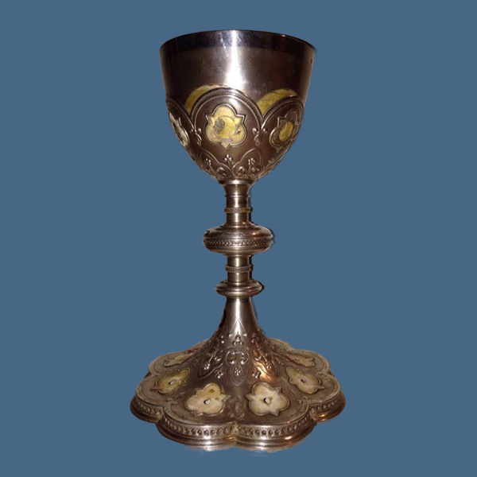
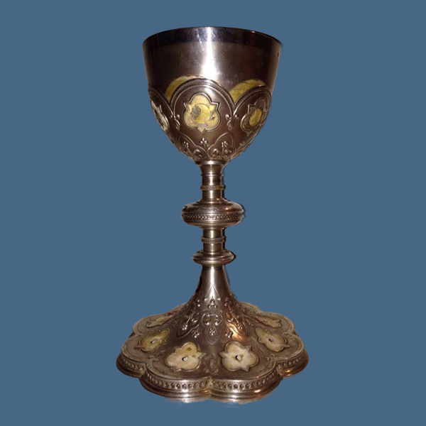

Restauración de elementos litúrgicosRestauração de elementos litúrgicos
Servicio artesanal de restauración y baño de oro y plata para objetos litúrgicos. Unimos tradición y técnica para preservar la dignidad de cada pieza.Serviço artesanal de restauração e banho de ouro e prata para objetos litúrgicos. Unimos tradição e técnica para preservar a dignidade de cada peça.
- Primera pieza gratis, como muestra.Primeira peça grátis, como amostra.
- Garantía de 2 a 3 años en todos nuestros baños.Garantia de 2 a 3 anos em todos os nossos banhos.
- Atención especializada en español y portugués.Atendimento especializado em espanhol e português.
Galería de TrabajosGaleria de Trabalhos
CálizCálice
CálizCálice
 
CálizCálice
CálizCálice
CálizCálice
CálizCálice
CálizCálice
CálizCálice
CustodiaCustódia
CustodiaCustódia
CustodiaCustódia
CopónCopón
CopónCopón
CopónCopón
CiborioCibório
CiborioCibório
SagrarioSacrário
CandelabroCandelabro
CandelabroCandelabro
CandelabroCandelabro

PatenaPatena
CrismeraCrismera
CampanaSineta
CampanaSineta
CrucifijoCrucifixo
IncensarioTuríbulo
Esto es solo una muestra. Podemos restaurar más de 40 tipos de objetos litúrgicos. Y no dude en consultar al respecto. Esta é apenas uma amostra. Podemos restaurar mais de 40 tipos de objetos litúrgicos. E não hesite em nos consultar a respeito.
Nuestro Proceso de ConfianzaNosso Processo de Confiança
Visita y DemostraciónVisita e Demonstração
Un representante de confianza le visita y retira una pieza para una demostración gratuita de nuestro trabajo.Um representante de confiança visita e retira uma peça para uma demonstração gratuita do nosso trabalho.
Presupuesto y RetiroOrçamento e Retirada
Evaluamos sus piezas, le hacemos un presupuesto en el acto y, si está de acuerdo, las retiramos.Avaliamos suas peças, fazemos um orçamento no ato e, se concordar, as retiramos.
Restauración ArtesanalRestauração Artesanal
Nuestros artesanos devuelven el esplendor a sus objetos en un plazo de 7 a 10 días.Nossos artesãos devolvem o esplendor aos seus objetos em um prazo de 7 a 10 dias.
Entrega y GarantíaEntrega e Garantia
Le devolvemos sus artículos religiosos restaurados, con una garantía de 2 años sobre nuestro trabajo.Devolvemos seus artigos religiosos restaurados, com uma garantia de 2 anos sobre nosso trabalho.
¿Listo para restaurar sus piezas?Pronto para restaurar suas peças?
Póngase en contacto con nosotros. Será un honor atenderle y devolverle la belleza a sus objetos más preciados.Entre em contato conosco. Será uma honra atendê-lo e devolver a beleza aos seus objetos mais preciosos.
Enviar Mensaje por WhatsAppEnviar Mensagem pelo WhatsApp